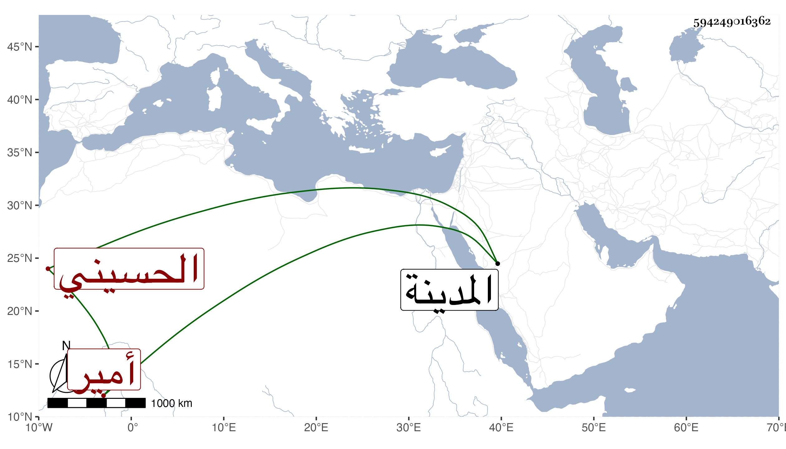

0902Sakhawi.DawLamic.ITO20230111-ara1.EIS1600.594249016362
Biography ID: 594249016362
1013
سليمان بن عزيز بن هيازع بن هبة الحسيني أمير المدينة . وليها بعد أميان بن مانع المصرف في أواخر سنة اثنتين وأربعين فدام إلى أن مات في ربيع الآخر سنة ست وأربعين وكان نائبه حيدرة بن دوغان بن هبة . وسيأتي له ذكر في ميان بن مانع وأبي الفضل محمد بن أبي بكر بن الحسين المراغي .
